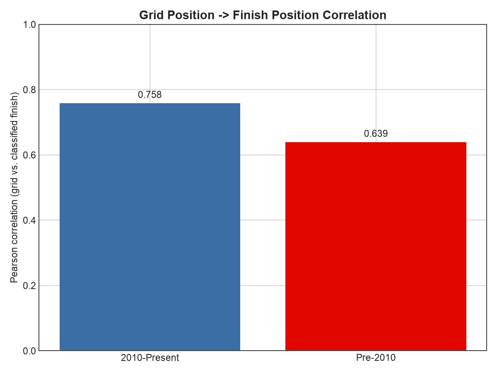
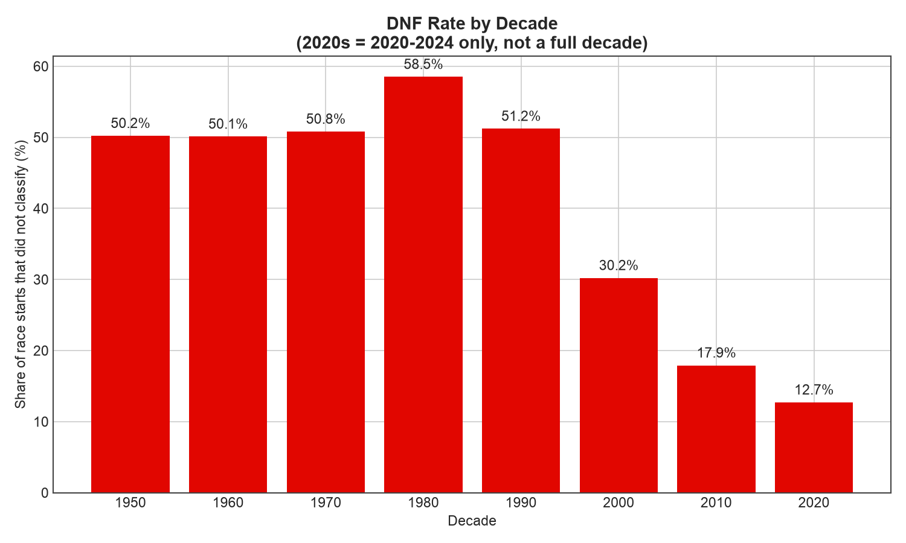
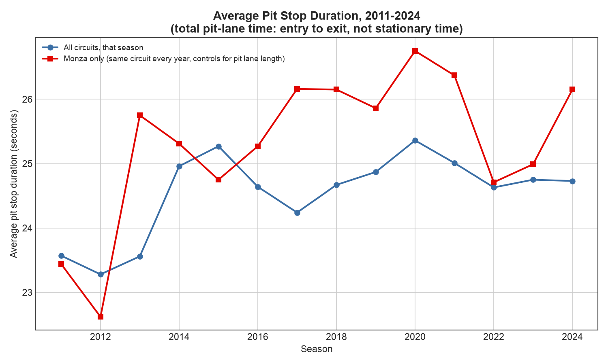
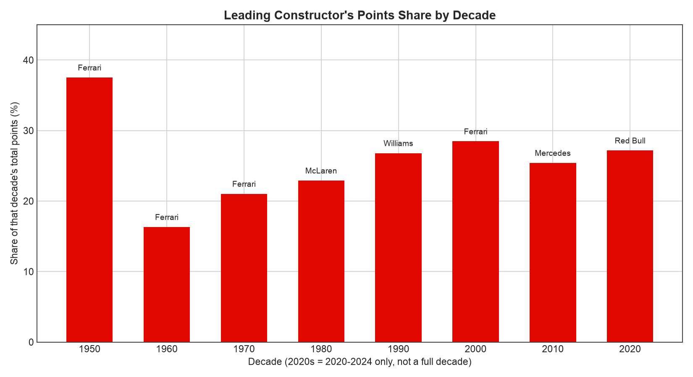
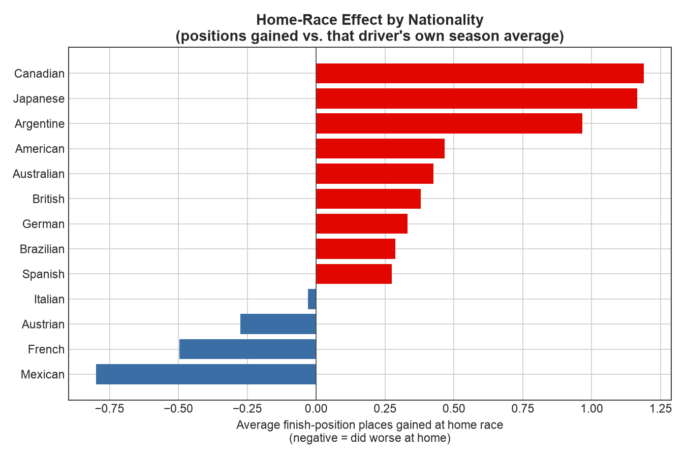
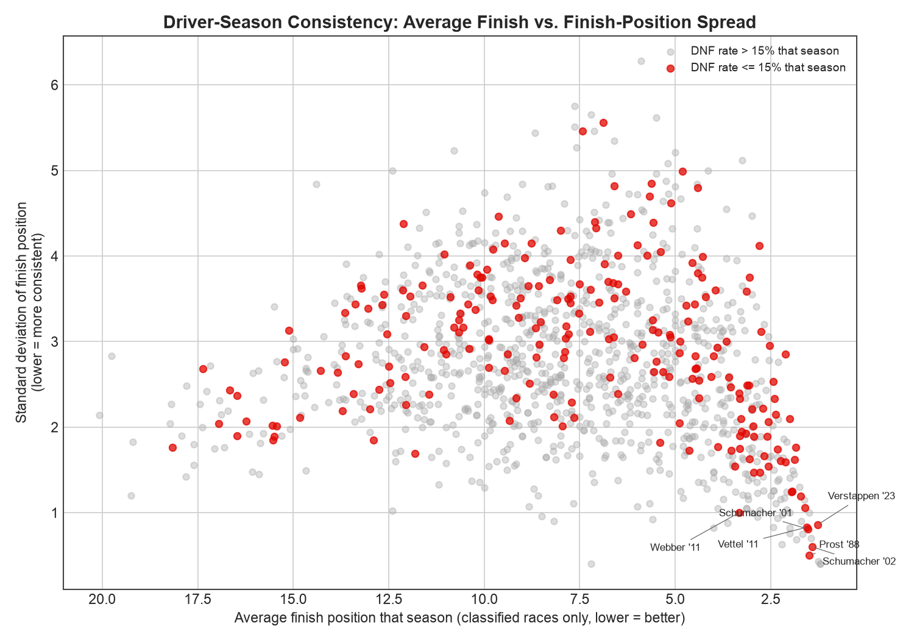

Case Study
Grid, Glory, and the Ones Who Never Won: 75 Years of F1 in SQL
If you're a performance analyst working for a team, a broadcaster building a season narrative, or a sponsor deciding where marketing spend actually lands, "F1 is competitive" isn't useful on its own. You need to know how much qualifying still matters before investing in a Saturday specialist, which circuits chew through cars badly enough to justify extra spares, whether a home race is actually worth the premium teams pay for it, and who a pit crew should be benchmarked against. This project runs 75 years of real Grand Prix results through SQL — window functions, a Pearson correlation built from its raw definition, a self-join for home-race effects — to answer exactly those questions, and finds a few results that cut against the sport's own popular narrative.
The dataset is the Ergast F1 database (1,125 races, 26,759 results, 1950 through 2024), loaded into a 12-table SQLite database and queried directly — no notebook, no framework, plain scripts end to end.
Qualifying decides more of the race now than it used to
The popular story is that modern aero rules made overtaking easier, so where you start should matter less than it once did. The data says the opposite. The Pearson correlation between grid position and classified finish is 0.639 before 2010, and 0.758 from 2010 onward — qualifying performance is a stronger determinant of the race result today than in any prior era in this dataset.

Reliability got worse before it got dramatically better
DNF rate held steady around 50% from the 1950s through the 1970s, then got worse in the 1980s (58.5%) — the turbo era's notoriously fragile engines — before falling sharply: 30.2% in the 2000s, 17.9% in the 2010s, and 12.7% in the 2020s so far. DNFs are down more than fourfold since the 1980s peak.

The pit stop number everyone quotes isn't in this data
Ergast's pit-stop timing measures total pit-lane time, entry to exit, not the sub-two-second stationary tire change F1 broadcasts headline — even the fastest recorded stop in any year here is 13–16 seconds. Raw year-over-year averages are also confounded by which circuits, with their different pit lane lengths, were on the calendar that season. Controlling for that by tracking one circuit, Monza, across every season it ran from 2011 to 2024, average duration went from 23.4 seconds to 26.2 seconds: flat to slightly up, not down. Red Bull is the fastest pit crew of the last three seasons at 24.07 seconds average, which at least matches their real-world reputation, and is the more reliable read from this data than any cross-year trend.

No team has dominated an era the way 1950s Ferrari did
Ferrari took 37.5% of all points in the 1950s, F1's one real near-monopoly — their own share collapsed to 16.3% the very next decade, the lowest of any era in the dataset. By the 2000s, their best decade since, they managed 28.5%, and the most dominant team of the 2020s so far, Red Bull, holds 27.2%. Every decade from the 1980s onward has had a "dominant" constructor topping out in the mid-to-high twenties, well below the 1950s peak but with no clean downward trend after it.

Home advantage is real for some drivers, and backwards for others
Pooled across every driver, the home-race effect is small: +0.16 positions on average, across 692 home-race instances. Split by nationality, the pooled number hides real disagreement. Canadian drivers gained 1.19 positions at home and Japanese drivers 1.17, though both rest on modest samples (14 and 19 instances). French drivers, with a solid 87-instance sample, lost 0.50 positions at their home race, and Italians, at 118 instances, were essentially flat at −0.03. There's no single "home advantage" story here — it depends who you are.

Consistency isn't quite the same as steadiness
Sorted purely by finish-position variance, the most "consistent" driver-seasons mix genuinely dominant championship runs — Alain Prost 1988, Michael Schumacher 2001 and 2002, Max Verstappen 2023, all near-zero DNF rate and near-guaranteed podiums — with a few high-DNF seasons that only look steady because the handful of races the driver actually finished happened to be similar results. The chart below separates the two: red marks a season with a DNF rate of 15% or lower. The genuinely steady story is the reliable-car cluster in the bottom right, not the raw ranking on its own.

The best driver to never win a title
By this measure, it isn't close. Stirling Moss finished championship runner-up four times — 1955, 1956, 1957, and 1958 — missing the title by as little as 1 point in his last shot. The single closest near-miss in the dataset by any measure belongs to someone else, though: Felipe Massa's 2008 season, lost by exactly 1 point, at his own home Brazilian Grand Prix, one of the most-replayed moments in the sport's history. The query surfaced it purely on the numbers, which is a reasonable sanity check that the underlying logic is measuring something real. Wolfgang von Trips lost 1961 by that same 1-point margin, in the season in which he was killed at Monza before it ended.
What this means for a team, a broadcaster, or a sponsor
Because the grid-to-finish correlation has risen since 2010, treating Saturday as a formality and Sunday as "where racing happens" works against what the modern data shows — qualifying is the bigger lever now, not the smaller one. Reliability engineering and spares budgeting are better planned by circuit than by era: DNF rate by circuit ranges from 13.1% at Yas Marina to 62.3% at Long Beach among tracks with meaningful history, mostly street circuits and older layouts, and a flat league-wide rate would miss that spread entirely. And home advantage shouldn't be sold as a universal sponsorship premium — the pooled effect is small, and two solid-sample nationalities here (French, Italian) show flat-to-negative results at their own home race. A marketing case for a home race is better built on that specific driver's or team's own history than on a generic assumption.
Limits
Session-level data has real, disclosed coverage gaps: pit_stops.csv starts in 2011 and lap_times.csv in 1996, because F1 didn't record either electronically before those points, so the pit-stop analysis is scoped to 2011–2024 only. Pit stop duration itself measures total pit-lane time, not the stationary tire-change time broadcasts headline, and the cross-year trend is further confounded by which circuits were on a given season's calendar, which is why the Monza-only series exists as the more trustworthy read. Home-country mapping is necessarily incomplete: driver nationality and circuit country use different vocabularies, mapped by hand for the roughly 26 nationalities with a matching circuit in this dataset, and dual nationalities or nationalities with no corresponding circuit are excluded entirely rather than guessed at. The consistency and DNF-by-circuit rankings both use fixed minimum-sample floors that structurally favor the modern era, when F1 ran longer seasons and circuits hosted more races. The 2020s bucket covers 2020–2024 only, five seasons, not a full ten, in every chart and table that groups by decade. And this is results data, not race-conduct data — there's no lap-by-lap position change or safety-car timing before recent years, so the grid-to-finish correlation measures the outcome relationship, not why it changed; aero rules are the most commonly cited explanation for reduced overtaking in this era, but this dataset can't isolate that specific mechanism from others that shifted over the same period, like tyre rules or track design.